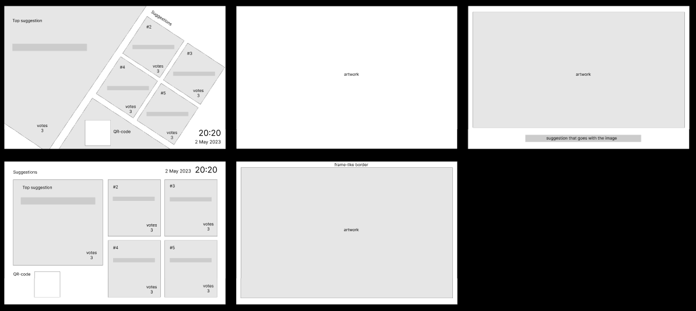

Digitale tafel voor de LOT-gemeenschap
Context
De groepsopdracht voor de week was om een interactieve systeem te bedenken en ontwerpen, waarmee studenten hun kernwaarden met betrekking tot de LOT-gemeenschap kunnen delen. Dit systeem moet openbaar zijn op Eindhoven University of Technology en anderen inspireren om hun inbreng te geven. Aan dit project werkte ik samen met een team van 9 anderen, waarin ik grotendeels werkte aan de ontwerpen.
Ontwerpen
In het begin van het ontwerpproces heb ik wireframes voor de interactive tafel ontworpen, waarin twee ontwerpen opkwamen: Een standaard, vierkante ontwerp die de suggesties het makkelijkst weergeeft zonder enige afleidingen in het ontwerp, en een diamant-vorming, modern ontwerp dat meer opvallend is en beter aansluit met jonge studenten die technische opleidingen doen. De vormgeving heb ik zo ontworpen zodat mensen makkelijk de applicatie kunnen gebruiken, en tekst erin goed leesbaar is.
Na de wireframes-fase heeft mijn groep besloten om met mijn diamant ontwerp verder te werken.In de eindresultaat heb ik een high-fidelity prototype ervan gemaakt. De gebruikte hoofdkleur is groen, dat vaak wordt geassocieerd met duurzaamheid en onderwijs. Dit is passend voor een project dat betrekking heeft op studenten en het milieu. Het algemene kleurenschema is licht pastel en wit, om een persoonlijkere, rustige uitstraling van de LOT-omgeving te geven. De knoppen zijn, naast groen, ook blauw om meerdere knoppen op een scherm beter te onderscheiden.

Reflectie
In het algemeen voelde ik goed over mijn betrokkenheid in het project, waarin ik de hoofdleiding had over de designs en UI van de applicatie. Tijdens de praktische aspecten in het project heb ik kunnen meedenken aan het project over de werking, verantwoordelijkheid getoont over mijn ontwerpen, en andermans taken kunnen volgen tot hun verwachtingen om goede ontwerpen te maken.